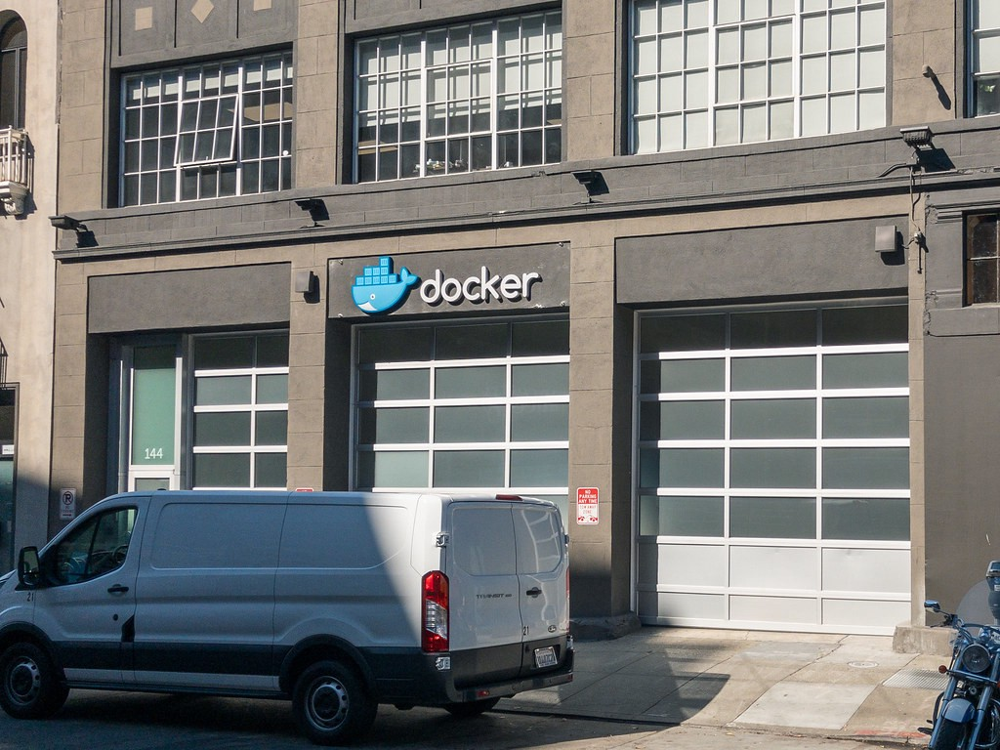
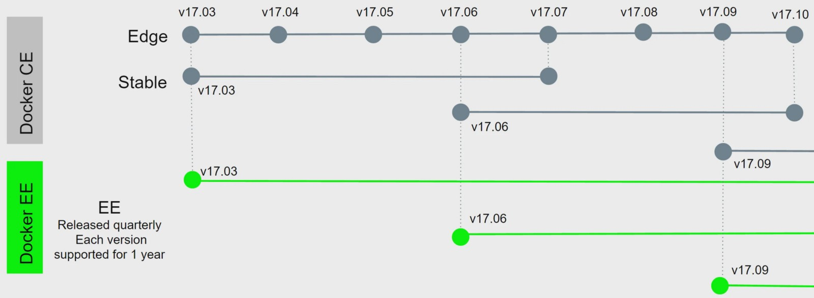
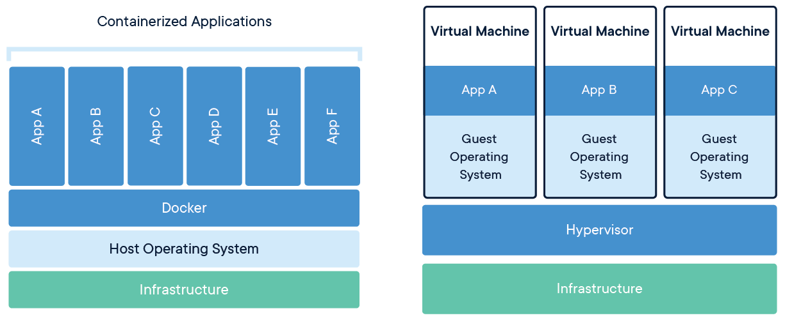

In 2013, a hosting company known as dotCloud, released an open-source project named as Docker and with that move they opened a new era in Computer Virtualization and I.T. industry. This old company still continue its life at San Fransisco with a little change, they are known as now.Docker Inc. now.

As a term, Docker has two meaning for us. One of them is operaring system based virtualization technology to run containers -Docker Platform- , other is a tool for the building and sharing of containerized applications and services -Docker Engine-.
Docker Platform Versions and Life Cycle

Docker LifeCycleDocker has two main version , Community Edition(CE) and Enterprise Edition(EE).CE is unpaid version of Docker and has two relase type,Egde and Stable. Edge is updating monthly and it is beta version.Stable and EE has same release cycle and updating with 3 months interval.Except that , E.E. has 1 year support and some additional features.
Docker Images
Docker images read-only and immutable construction set , for creating the environment you want.You can create your customized images or directly download created images from Docker Hub or your own hosted a container image registry.
Virtual Machines
End of 00's power of computer chips are increased and we create our infrastructure with Virtual Machine instead of real devices. With Virtual Machine(VM) technology, you can share your hardware resources on one computer with separated Virtual Machines. Each VM require reserved hard disk installed OS on this disk and virtual components reserved from the host machine. This reduced hardware costs however, maintenance cost increased cus managing this machine and reserve a resource for each machine needs to proficiency.
Then , What is Containers ?
Simply containers, virtual layers to run your apps and services abstractly on each one on Docker with self-reliant off your host operating system.No matter, which operating system running on your computer, Docker runs your docker containers on your machine. Contrary to old VMs, containers run on the same machine and share the OS kernel with other containers. When doing that, Docker does not do Hardware-level process isolation, the processes of each container are isolating from each other. This feature makes Docker fast and more manageable beside on VMs. Just notice that Docker has two type containers, commonly preferred one is Linux containers and you can use this containers on every OS. Other alternative is Windows containers, uses Hyper-V* and works with Windows 10 Pro/Enterprise or Windows Server 2016.No concern if you have the other versions of Windows. With Virtual Box you can run Docker containers on your system but it will be a reason of a Lil' bit headache for you. *On Windows , Hyper-V runs a Linux VM(Moby-LinuxVM) to run Docker and Linux containers.

What is Inside of Containers ?
Containers has a real operating system and environment variables.We are defining which operating system should be run on with which environment variables and setup of our software projects and dependencies.
Benefits of Containerization

Docker popularity puts it under a wide range support umberalla with tons of DevOps, CI /CD tools and cloud services.Additionally Docker provide some benefits coming from its nature.
- Environmental Isolation
- Lightweight Virtualization
- Raises productivity
- Standardize CI&CD
- Easy Portable & Scalable